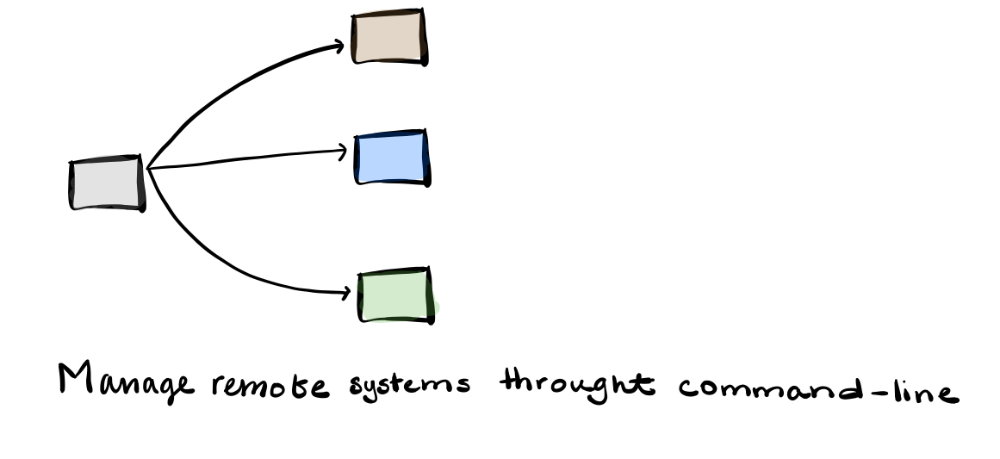
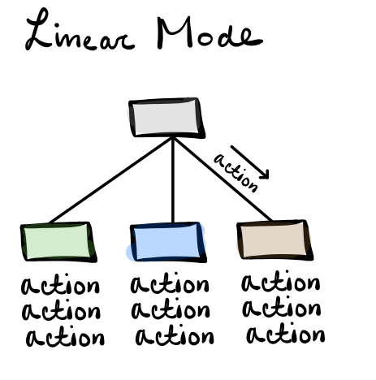
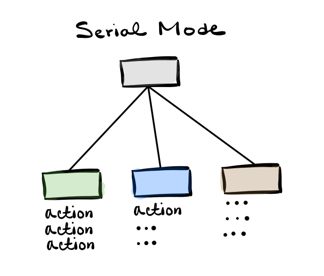
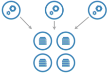

Ansible as its core is a task execution engine.
These tasks can target the local system Ansible is running from, as well as other systems Ansible can reach over the network.
It provides a method for operators, engineers, and developers to define one or more actions to be performed on one or more computers.
Ansible gives us the ability to manage remote systems.

Ansible provides a reusable and repeatable system for managing a fleet of infrastructure; using a simple to read text file.
Ansible at Scale – Execute tasks on multiple systems at the same time.
Modes of Operation: LinearLinearly execute a list of tasks on multiple machines at once. As the set of machines complete one task, they are given the next task to complete.
Allows for data generated in an action on a particular machine to be used as input data for a later task on a different machine.

Rolling Deployments – Usage of linear mode
- Smaller batches in specific order
- Ease a change into production
- Minimize the impact of an upgrade by disrupting only small portions of a service at any one time.
Modes of Operation: SerialInstead of linearly walking through the task list, one or more hosts in batches are walked through the task list before looping back to the beginning for the next set of hosts.

Modes of Operation: Run as Fast as You CanThis mode allows the machines to complete the tasks as fast as they can, without waiting for the rest of the hosts to complete a given task.
When using this mode, you cannot depend on the data generated by another host.
Low-Cost fleet management
- Ansible is a lightweight fleet management system.
- There only needs to be one control where the Ansible engine is installed.
- Agents or other automation systems
- Installed on remote hosts
- Perform automation functions
- Communication
- Required preconfiguration
- The actions to be performed may themselves require additional software on the target hosts, but Ansible can take care of the installation of those requirements as well.
- Communication with target hosts defaults to SSH, a widely available and trusted communication protocol. Instructions for an action to perform, and the necessary software to perform the desired tasks, are transported over SSH.
SSH
• Widely available
• Trusted
Transports
• Task instructions
• Task code
• Return data
Ansible can be run from any system that has access rights to the target hosts.

Running Ansible- Requires an inventory source for potential targets
- State directves
- Single or multiple
- Either expressed as a single ad hoc action, or a series coded in a YAML file
- Credentials necessesary to communicate with the target
Requirements
- Python 2.6 or later
- Refer to official ansible documentation to install on your linux distro.
On Ubuntu Linux, the following command displays if ansible is installed:
which ansible
To check the version use → ansible --version
It is also possible to install ansible through Python virtual environment. This is good when you don’t have the rights to install ansible. You do this method if you do not have root access; however, remember that you should have access to these tools one way of another.